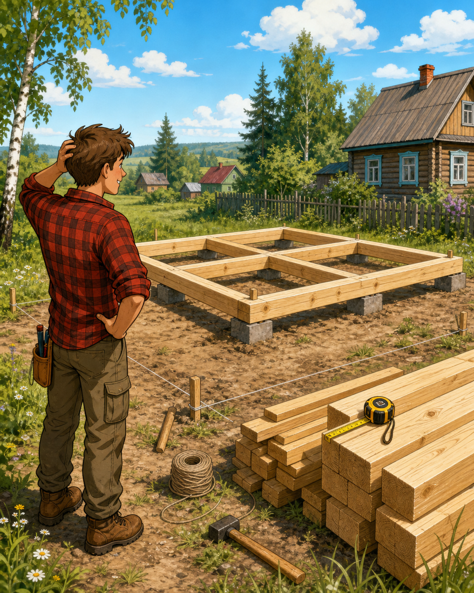
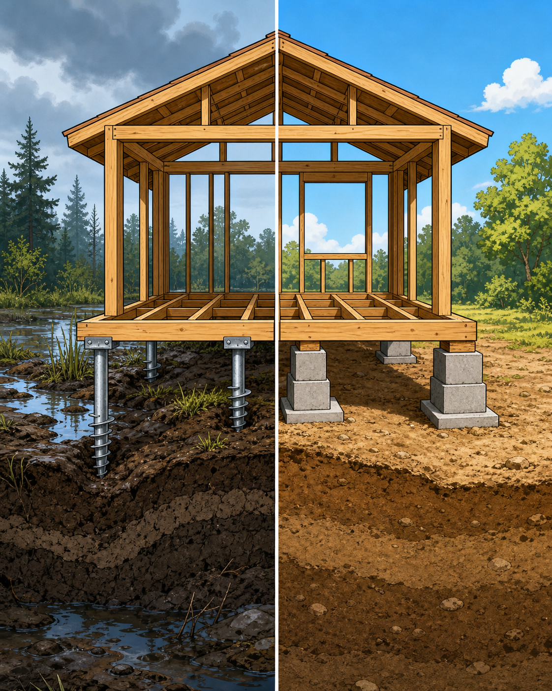
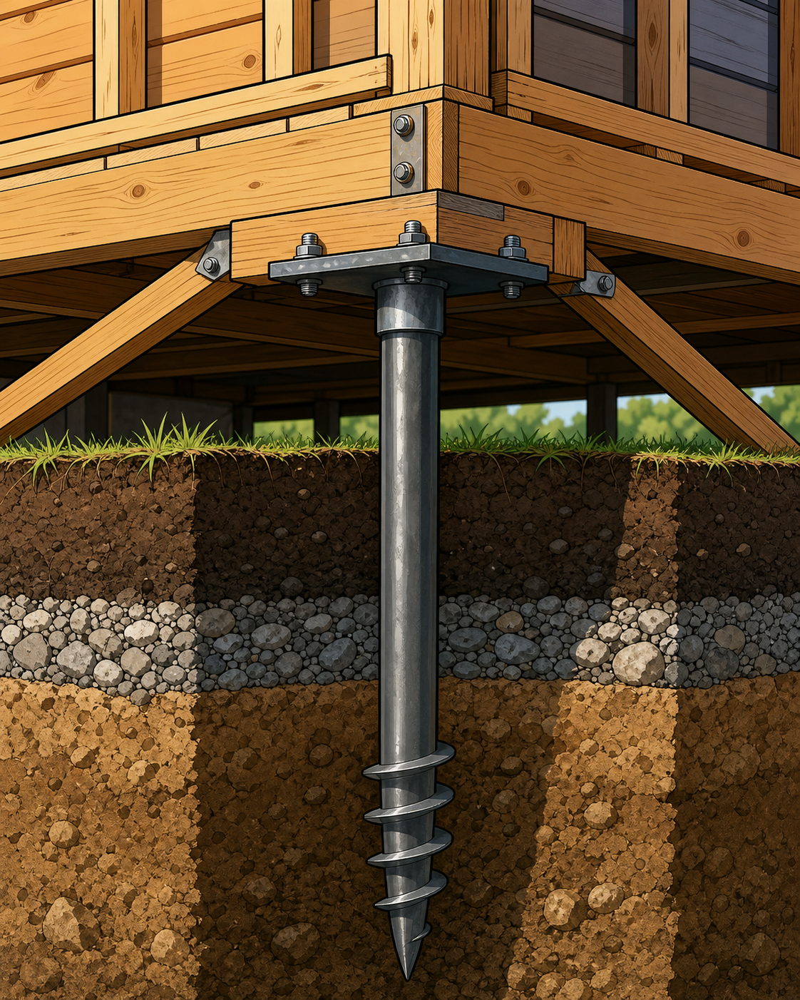
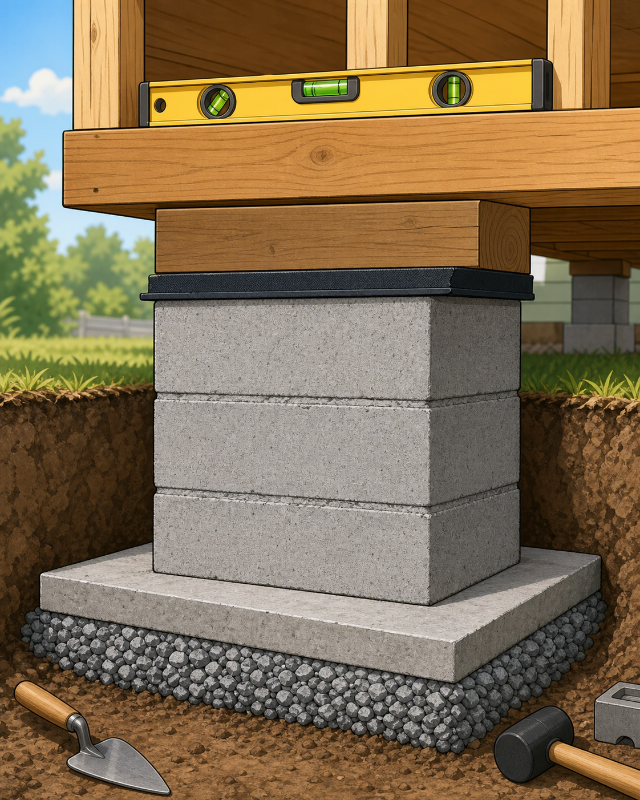
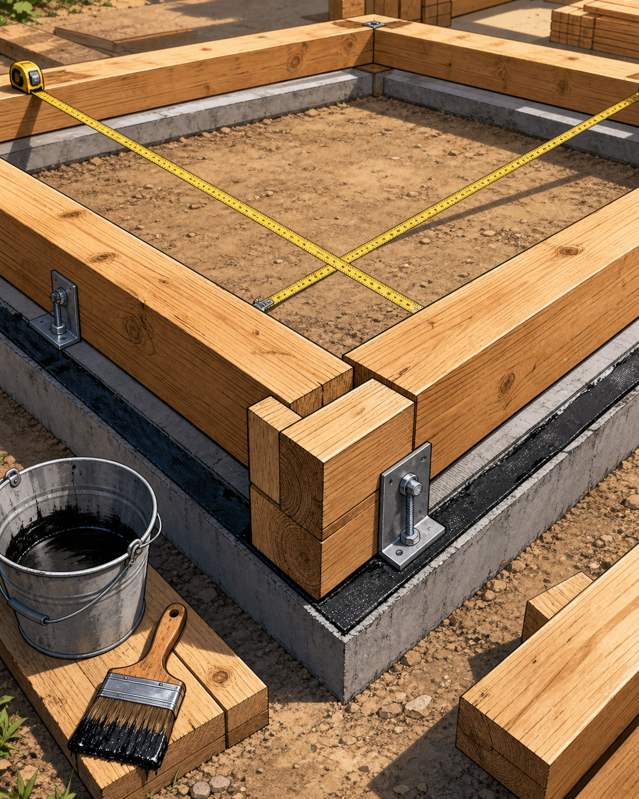
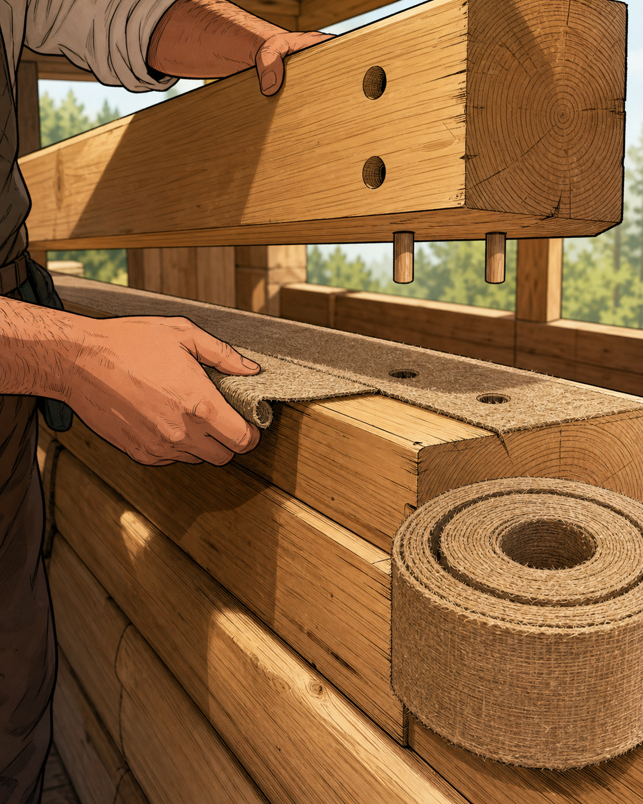
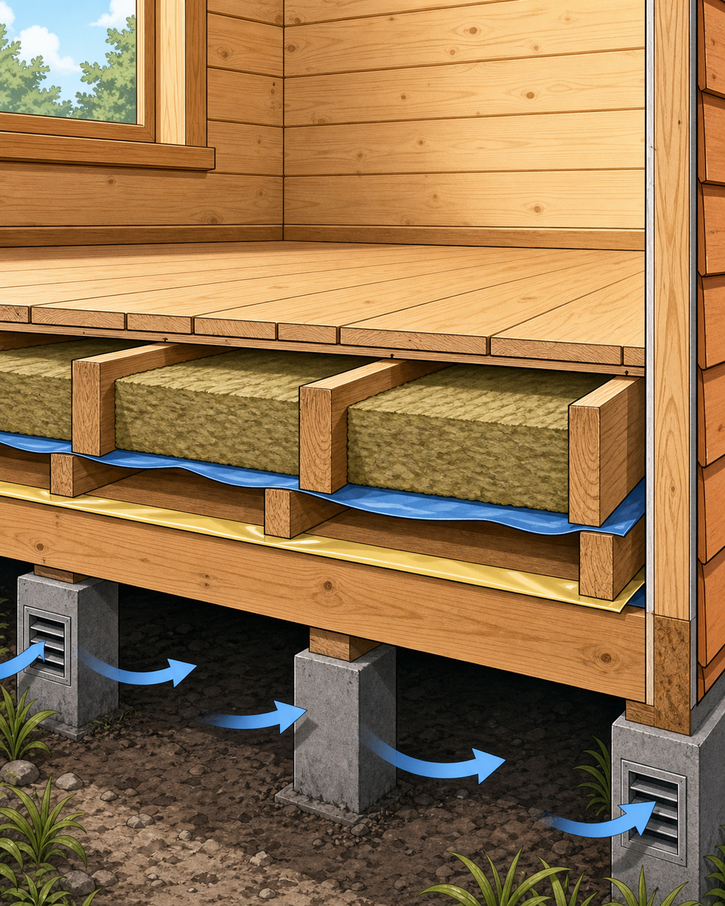
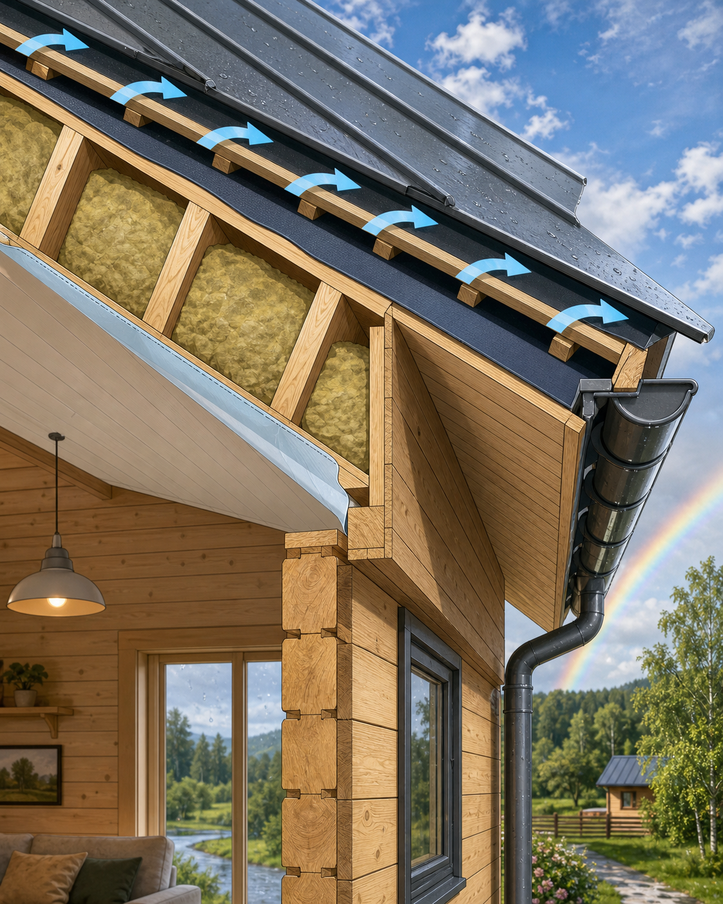
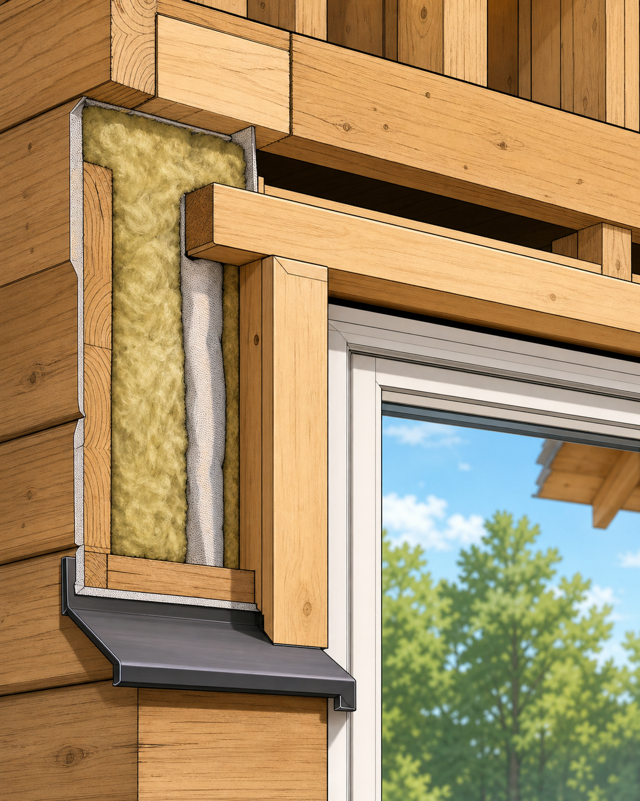
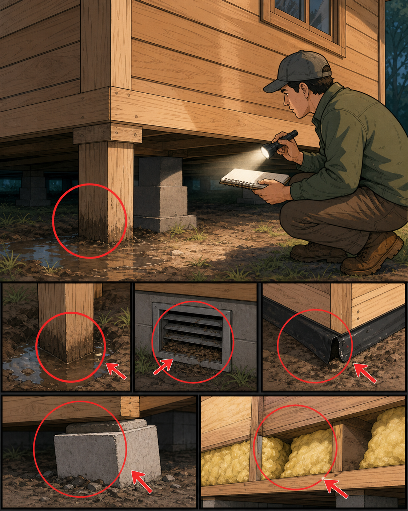

Простая дорожная карта для человека, который еще не строил дом, но хочет понимать главное: где нельзя экономить, как читать узлы и почему “потом поправим” в стройке часто стоит дороже.

Главная мысль: дом начинается не с стен, а с сухого места, ровной базы и спокойной головы.
1
Сначала не покупай брус. Сначала пойми участок
Дом 6x6 кажется маленьким, но ошибки у него взрослые. Перед заказом материала надо понять три вещи: где вода, какой грунт и куда зимой уходит снег. Если низ дома будет мокнуть, самый красивый брус быстро станет проблемой.
Вода
После дождя посмотри, где стоят лужи. Дом лучше ставить там, где вода не собирается и есть куда сделать отвод.
Грунт
Песок обычно спокойнее глины. Торф, насыпной мусор, сырая низина и сильный уклон требуют специалиста.
Геометрия
Разметь квадрат 6x6 колышками и шнуром. Диагонали должны быть равны, иначе дом начнет жить ромбом.
Документы
Проверь отступы от границ, красных линий, соседей и коммуникаций. Это скучно, пока не заставят переносить.
2
Фундамент: блоки или сваи?

Фундамент выбирают не по красоте, а по грунту, воде, уклону и бюджету на исправление ошибок.
Блоки хороши, когда
Площадка сухая, грунт плотный, перепад небольшой, а под каждым блоком есть уплотненная подушка и плита-основание.
Сваи хороши, когда
Есть уклон, мокрый верхний слой, нужна продуваемая база, а несущий слой можно достать ниже проблемного грунта.
Важно: “поставим блок прямо на землю” не фундамент. Это лотерея, где дом играет твоими дверями, окнами и нервами.
3
Сваи: главное не железка, а уровень

Свая должна стоять глубже сезонной каши грунта, а обвязка сверху должна быть одной ровной плоскостью.
Оголовки свай выставляют по одному уровню, иначе пол и стены начнут повторять ошибку.
Между металлом и деревом нужен гидроизоляционный слой или прокладка, чтобы влага не шла в брус.
Обвязку крепят к оголовкам, а углы усиливают. Дом не должен просто “стоять сверху”.
Под полом оставляют продуваемое пространство. Закрытый сырой низ превращает дерево в расходник.
4
Блоки: дешево только при аккуратности

У блока должна быть твердая “подошва”: снятая органика, щебень, трамбовка, плита и гидроизоляция.
Представь блок как ножку стола. Если одна ножка стоит на мягкой грязи, стол качается. С домом то же самое, только поправлять тяжелее.
5
Первый венец: самый важный ряд дерева

Первый венец задает форму всему дому. Если он кривой, дальше ты строишь красивую кривизну.
Нижний брус пропитывают антисептиком особенно тщательно: он ближе всех к влаге.
Под брус кладут гидроизоляцию. Дерево не должно пить воду из бетона или металла.
Диагонали проверяют до крепления. Равные диагонали означают прямой прямоугольник.
Углы собирают плотно, но без иллюзии: дерево живое, оно будет садиться и менять размер.
6
Между брусом кладут не “что-нибудь”, а ровную ленту

Межвенцовый утеплитель кладут непрерывно, без комков и пропусков. Его задача: закрыть щель, а не создать бугор.
Хорошо
Джут или льноватин ровной полосой по всей длине бруса, аккуратные выпуски, углы без дыр.
Плохо
Пена между венцами, куски “по настроению”, мокрый утеплитель, грязь и щепа в шве.
Деревянный дом продувается не потому, что дерево плохое. Чаще всего виноваты щели, углы и спешка.
7
Пол: тепло должно быть сухим

Утеплитель работает, пока он сухой и не продувается ветром. Мембраны ставят не для красоты, а чтобы управлять влагой.
Снизу нужна защита от ветра, но не пакет, где будет заперта вода.
Минеральная вата лежит плотно между лагами, без щелей по краям.
Со стороны комнаты ставят пароизоляцию с проклейкой нахлестов.
Под домом должны быть продухи или нормальная вентиляция подполья.
8
Крыша спасает стены каждый день

Хороший свес, вентиляционный зазор и правильные пленки продлевают жизнь дому сильнее, чем модная отделка.
У крыши есть простая работа: вода не должна попадать в стену, а пар из дома не должен застревать в утеплителе. Если утеплитель намок, он превращается из теплой куртки в мокрое полотенце.
9
Окна и двери: дом будет садиться

В проемах нужна обсада и зазор сверху. Окно не должно держать на себе стену.
Самая дорогая ошибка: жестко прикрутить окно к брусу без учета усадки. Потом раму давит, створки клинит, стеклопакет страдает.
Обсада
Это коробка, которая держит форму проема, но позволяет стене садиться рядом с окном.
Зазор
Сверху оставляют место под усадку и заполняют мягким утеплителем, а не жесткой распоркой.
10
Ошибки, которые выглядят мелочью

Мелочь в деревянном доме часто не кричит сразу. Она тихо копит влагу, перекос и холод.
Нельзя закрывать подполье наглухо, если там может скапливаться сырость.
Нельзя оставлять торцы бруса под дождем без защиты: торец пьет воду особенно быстро.
Нельзя путать пароизоляцию и ветрозащиту. У них разные стороны и разные задачи.
Нельзя начинать отделку до понятной усадки, если конструкция этого требует.
Нельзя верить фразе “и так сойдет”, если речь о воде, уровне, диагоналях и примыканиях.
✓
Мини-план стройки
1. Участок
Вода, уклон, грунт, подъезд, отступы, место под материалы.
2. Проект
План 6x6, высота, крыша, печь или отопление, окна, двери, электрика.
3. Основание
Фундамент по грунту, уровень, гидроизоляция, продувание низа.
4. Коробка
Первый венец, углы, нагели, межвенцовый утеплитель, диагонали.